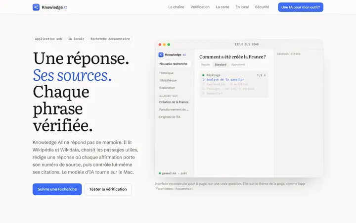
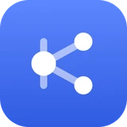
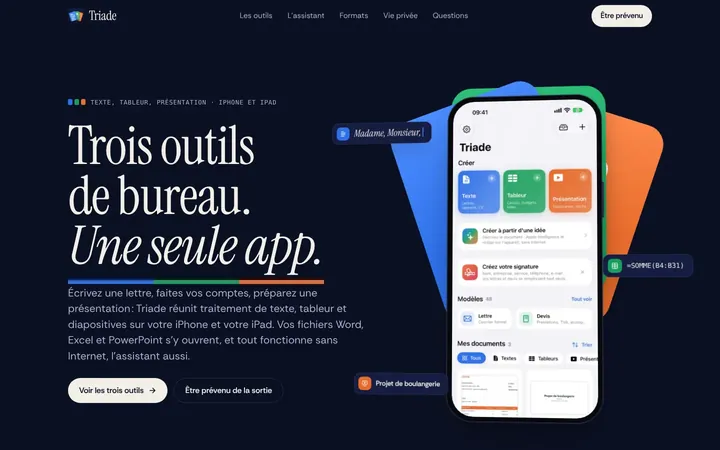

03Intelligence artificielle · pour les entreprises
Une IA utile pour votre entreprise, qui cite ses sources.
Un assistant qui répond à partir de vos documents, des tâches répétitives qui se font seules, une IA intégrée à vos outils. Des réponses vérifiables, et vos données protégées, installées chez vous si besoin.
- Diagnostic
- 1 h, gratuit, en visio
- Délai
- sur demande
- Données
- chez vous si besoin
- Budget
- dès 1 200 €
Assistant documentaireExemple fictif · documents d’une menuiserie
Un client demande la garantie de ses fenêtres alu posées en 2025. Que lui répondre ?
Ses fenêtres aluminium sont garanties dix ans pour l’étanchéité et deux ans pour les pièces mobiles, comme les poignées et les crémones.
Il fait sa demande par e-mail au service après-vente, avec son numéro de facture et des photos du défaut.
Sources citées
Conditions générales de vente art. 8.2 · p. 4Les menuiseries aluminium bénéficient d’une garantie de dix ans sur l’étanchéité à l’air et à l’eau, à compter de la réception des travaux.
Fiche produit Alu A70 p. 2Quincaillerie (poignées, crémones, paumelles) : garantie de deux ans, pièces et main-d’œuvre.
Procédure SAV version 3Toute demande sous garantie est adressée par e-mail au service après-vente, avec le numéro de facture et des photos du défaut.
3 documents citésModèle installé chez l’entrepriseTouchez un numéro pour voir le passage
01Cas d’usage
Des tâches précises, pas de promesse magique.
Ce qui prend du temps aujourd’hui et qu’une IA fait bien, sous votre contrôle.
- 01
Un assistant qui connaît vos documents
Procédures, contrats, fiches produits, comptes rendus : posez une question, obtenez la réponse et le passage exact d’où elle vient.
- 02
Les tâches répétitives, faites pour vous
Trier les e-mails entrants, lire les factures fournisseurs et préremplir la comptabilité, résumer une réunion.
- 03
La parole transformée en notes
Mémos vocaux, appels, réunions : transcription, puis tâches, dates, personnes et décisions relevées.
- 04
L’IA dans vos outils
Recherche intelligente, rédaction assistée, classement automatique, directement dans votre site, votre app ou votre logiciel.
- 05
Des agents qui exécutent
Préparer un devis, relancer, synthétiser : des missions confiées à des agents. Un humain valide avant tout envoi.
- 06
Pour commencer : un diagnostic honnête
Une heure, en visio si besoin, pour repérer les tâches où l’IA vous ferait gagner du temps, et celles où elle ne servirait à rien.
02Vos données
La vraie question : où vont vos documents ?
Elle est réglée au début du projet, par écrit, avant toute ligne de code.
- En local quand il le faut
- Le modèle tourne sur vos machines, un Mac ou un serveur : aucun document ne sort de l’entreprise.
- Sinon, des fournisseurs encadrés
- Modèles hébergés en Europe, ou contrats qui excluent l’entraînement sur vos données, choisis avec vous.
- Le minimum de données
- Seul ce qui est nécessaire à la tâche est transmis, et rien n’est conservé sans raison.
- Des réponses vérifiables
- L’assistant cite ses sources et dit quand l’information n’est pas dans vos documents, au lieu d’inventer.
- Un humain décide
- Pour ce qui engage l’entreprise, comme un devis ou un e-mail client, l’IA propose et vous validez.
- Transparence
- Un assistant tourné vers vos clients se présente comme une IA, comme le demande le règlement européen sur l’IA.
03Réalisations
De l’IA déjà au travail, à essayer en ligne.
Une IA locale qui cite ses sources, des mémos analysés sur l’iPhone, un traitement de texte qui rédige, des agents dans une agence en 3D.
-



Knowledge AI
Application web · IA localeSuivre une rechercheKnowledge AI répond avec une IA qui tourne sur le Mac, et cite chacune de ses sources.
Python, FastAPI, Next.js, Ollama, SQLite
-


Sténo
App iPhone et iPad · Prise de notesEssayer la démoSténo transforme vos mémos vocaux en notes claires et en tâches à faire.
SwiftUI, Foundation Models, SpeechAnalyzer, App Intents, WidgetKit
-



Triade
App iPhone et iPad · BureautiqueEssayer la démoTriade réunit texte, tableur et présentation dans une seule app, même sans Internet.
SwiftUI, UIKit, Foundation Models, App Intents
-


Startup3D
Application web · 3D temps réelEntrer dans l’agenceStartup3D met l’entreprise en volume : on la gère en traversant son agence.
React, TypeScript, Three.js, React Three Fiber
04Méthode
Mesurer sur vos documents avant de promettre.
Un projet d’IA se juge sur vos vrais cas, pas sur une démonstration. On teste d’abord sur un échantillon, puis on décide ensemble.
- 1
Diagnostic
1 heure · gratuit · devis sous 24 h
Vos tâches, vos documents, vos contraintes. On repère où l’IA est utile, et où elle ne l’est pas.
- 2
Prototype sur vos données
Délai sur demande
Une première version sur un échantillon de vos documents, et une série de questions-tests pour mesurer la qualité.
- 3
Mise en service
Délai fixé dans le devis
Intégration à vos outils, accès, formation de l’équipe, documentation.
- 4
Suivi
Sans engagement
Qualité des réponses, coûts d’usage, mises à jour des modèles : un point régulier.
05Budget
Des ordres de grandeur, avant le devis.
Chaque projet est chiffré à prix fixe après le diagnostic. Voici où démarrent la plupart d’entre eux.
- Automatisation d’une tâcheTri d’e-mails, lecture de factures, résumés de réunions.dès1 200 €
- IA intégrée à votre outilRecherche, rédaction assistée ou classement automatique dans votre site, app ou logiciel.dès1 900 €
- Assistant sur vos documentsRéponses avec sources sur vos procédures, contrats et fiches produits.dès2 900 €
- IA localeLe même assistant, installé sur vos machines : rien ne sort de l’entreprise.dès4 900 €
Fourchettes indicatives, prix nets (TVA non applicable). Coûts d’usage en plus : avec un modèle en ligne, de quelques euros à quelques dizaines d’euros par mois selon le volume ; en local, pas d’abonnement, mais un ordinateur assez puissant.
06Questions
Questions fréquentes
Une autre question ? Écrivez-nous, sans joindre de document confidentiel.
L’IA peut-elle se tromper ?
Oui, et il faut le prévoir. C’est pourquoi les réponses citent leurs sources, l’assistant dit quand l’information n’est pas dans vos documents, et un humain valide ce qui engage l’entreprise. Avant la mise en service, la qualité est mesurée sur une série de questions-tests tirées de vos vrais cas.
Mes données confidentielles sont-elles en sécurité ?
Le choix se fait au début, par écrit : soit un modèle installé sur vos machines, et rien ne sort de l’entreprise, soit un fournisseur encadré, hébergé en Europe ou contractuellement exclu de l’entraînement sur vos données. Seul le nécessaire est transmis.
Quels modèles d’IA utilisez-vous ?
Le plus adapté à la tâche : des modèles ouverts qui tournent en local (avec Ollama, par exemple), Apple Intelligence directement sur l’iPhone et le Mac, ou des modèles en ligne d’éditeurs comme Mistral, OpenAI ou Anthropic. On compare sur vos documents avant de choisir.
Combien coûte une IA chaque mois ?
Avec un modèle en ligne, de quelques euros à quelques dizaines d’euros par mois pour une PME, selon le nombre de questions et de documents. En local, il n’y a pas d’abonnement, mais il faut un ordinateur assez puissant. L’estimation est donnée dès le prototype.
Faut-il changer nos logiciels ?
Rarement. L’IA se branche le plus souvent sur ce que vous utilisez déjà : messagerie, dossiers partagés, CRM, logiciel métier, quand ils le permettent. Le diagnostic vérifie ce qui est possible.
Que demande le règlement européen sur l’IA ?
Pour les usages courants d’une entreprise, l’obligation principale est la transparence : une personne doit savoir qu’elle échange avec une IA. Les usages dits à haut risque, comme le recrutement ou l’accès au crédit, ont des règles plus strictes ; on en parle dès le diagnostic.
En combien de temps peut-on démarrer ?
Le diagnostic d’une heure a lieu quand vous le souhaitez, en visio si besoin, et le devis suit sous 24 h. Le délai de réalisation se fixe sur demande, selon la tâche et les outils à relier : il est écrit dans le devis.
Qui est propriétaire de ce qui est développé ?
Vous : le code, les réglages, les consignes données au modèle et la documentation vous sont remis. Les comptes chez les fournisseurs d’IA sont ouverts à votre nom.
Diagnostic gratuit
Quelle tâche voulez-vous ne plus faire ?
Décrivez-la en quelques lignes, sans document confidentiel. On en parle une heure, gratuitement, et vous savez si l’IA peut vraiment vous aider.